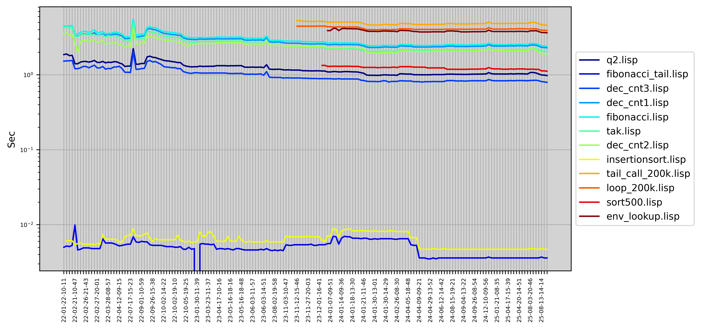
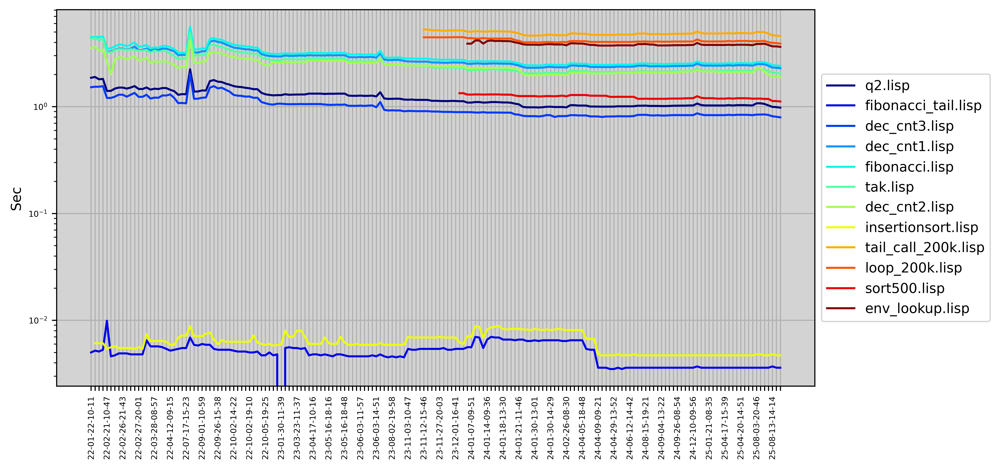

LispBM (LBM) is a lisp or scheme like programming language for microcontrollers. LispBM also borrows a couple of ideas from Erlang when it comes to concurrency, message passing, pattern matching and process monitoring. The LispBM runtime system can be compiled for either 32 or 64 bit platforms and runs on a wide range of hardware such as for example STM32, NRF52, ESP32 or X86. When running the LispBM runtime system on a microcontroller it can be built on top of ChibiOS, FreeRTOS or ZephyrOS or, if you are adventurous, on bare-metal. LispBM can also be built to run on top of a regular linux.
Who wouldn't want a REPL (read eval print loop) on their embedded platform? This is what LispBM is for!

The LispBM mascot, Lispy the llama, was created by PixiLadyArt. Thank you, Pixi!
There are lots of interesting things to code on in and around the LispBM runtime system. I would love to interact with people who are interested in high-level programming languages on microcontrollers (or elsewhere) so please do not be shy to make contact. Together we can make great stuff happen ;)
There are areas where insights and help would matter greatly. Some I can think of are:
The easiest way to get started with LispBM programming is to use VESC-Tool together with the VESC EXPRESS Firmware on an esp32c3.
VESC-Tool gives you access to a very capable IDE for lisp programming on embedded systems and the VESC Express firmware provides built in functionality to interface with CAN, WIFI, BLE and UART as well as GPIO and display drivers.
If you are looking for a more bare-bones way to add scripting capabilities to your embedded system, LispBM is quite platform independent and can be compiled for many different MCUs and systems. LispBM can tie into the rest of your application via what we call “extensions” which are C functions that can be called from your LispBM scripts.
If you want to build your own lisp environment based on LispBM on top of ChibiOS, Zephyr, FreeRTOS or bare-metal then this is quite possible! I am sorry, though, that there is currently not very documentation about how to get going with that. Looking at how the vesc_express integration works is one starting point as well as the x86 REPL mentioned below.
There is an example REPL implementation that runs on X86 32 or 64bit in the repl directory. The REPL depends on libreadline.
REPL Dependencies for 32Bit executable on 64Bit linux:
On Ubunty you can obtain the depencies by:
sudo apt-get install gcc-multilib libreadline-dev lib32readline-dev libpng-dev libpng-dev:i386
Then issue command make in the repl directory.
The pages below outline steps of development that LispBM went through during 2020 - 2022. The information is quite outdated in relation to what LispBM has become since then but perhaps still contain something fun for someone else who wants to build a lisp from the ground up.
The performance of the LispBM implementation continuously evolves as we introduce new features and engage in optimization efforts. We work to enhance its efficiency for microcontrollers, such as the STM32F4 running at 168MHz.
Below, you can find performance charts illustrating LispBM's performance on a set of benchmarks:
 

If you're interested in the technical details and benchmarks, you can explore our benchmark code here:
Explore a range of Lisp-like programming languages that are tailored for microcontroller development. These languages are designed to thrive in resource-constrained environments, making them ideal choices for embedded systems. Whether you're looking for a lightweight solution or a minimalist Lisp dialect, these languages offer unique approaches to microcontroller programming.
Is your favourite microcontroller lisp missing from this list? Please send the details in an email blog.joel.svensson@gmail.com.
{kind=link}